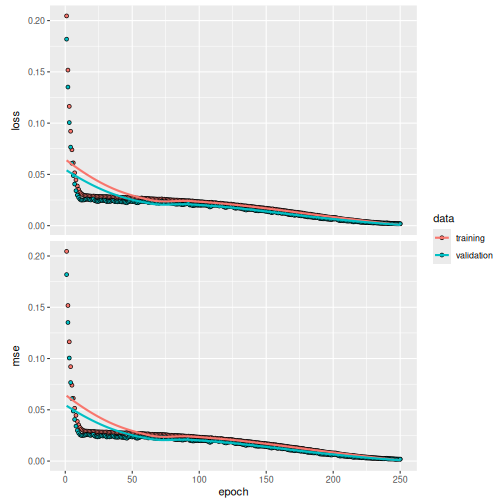
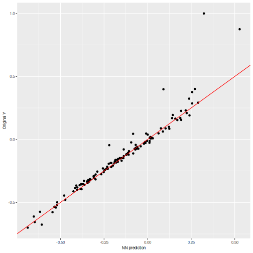
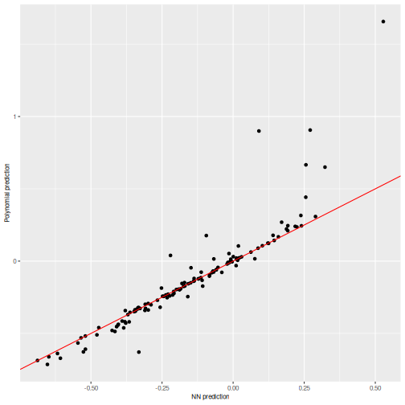
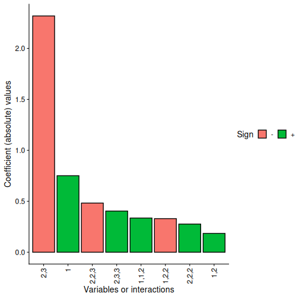
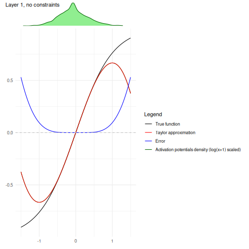
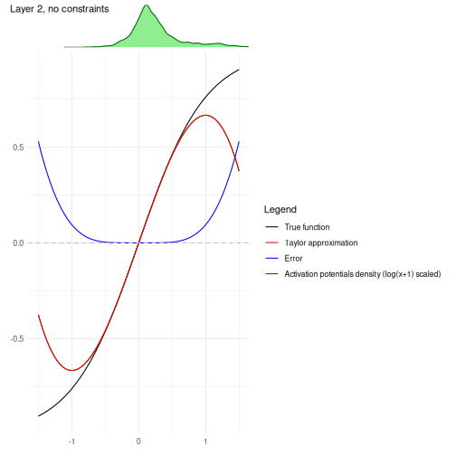
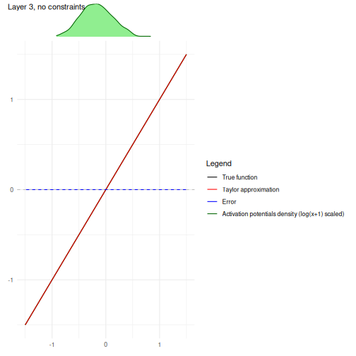

Introduction to nn2poly
Pablo Morala
Source:vignettes/nn2poly-01-introduction.Rmd
nn2poly-01-introduction.Rmd
nn2poly package goal
The main objective of nn2poly is to obtain a
representation of a feed forward artificial neural network (like a
multilayered perceptron) in terms of a polynomial representation. The
coefficients of such polynomials are obtained by applying first a Taylor
expansion at each activation function in the neural network. Then, this
expansions and the given neural network weights are joint using
combinatorial properties, obtaining a final value for the polynomial
coefficients. The main goal of this new representation is to obtain an
interpretable model, serving thus as an eXplainable Artificial
Intelligence (XAI) tool to overcome the black box nature of neural
networks by means of interpreting the effect of those obtained
polynomial coefficients.
More information with the theoretical insights about the underlying mathematical process used to build this relationship can be found in the following references:
Pablo Morala, J. Alexandra Cifuentes, Rosa E. Lillo, Iñaki Ucar (2021). “Towards a mathematical framework to inform neural network modelling via polynomial regression.” Neural Networks, 142, 57-72. doi: 10.1016/j.neunet.2021.04.036
Pablo Morala, J. Alexandra Cifuentes, Rosa E. Lillo, Iñaki Ucar (2023). “NNN2Poly: A Polynomial Representation for Deep Feed-Forward Artificial Neural Networks.” IEEE Transactions on Neural Networks and Learning Systems, (Early Access). doi: 10.1109/TNNLS.2023.3330328
Important remark: The approximations made by NN2Poly rely on Taylor expansions and therefore require some constraints to be imposed when training the original neural network in order to have those expansions controlled. The implementation of these constraints depends on the deep learning framework used to train the neural networks. Frameworks currently supported are tensorflow and torch. Details on how constraints are applied on each framework are covered in
vignette("nn2poly-02-supported-DL-frameworks"). However,nn2polycan work by default with any kind of neural network by manually feeding the neural network weights and activation functions to the algorithm. Therefore,nn2polyis not limited to any of the supported deep learning frameworks.
This vignette: a first example
In this vignette we present the basic behavior of
nn2poly when used in its default version, without
specifying any deep learning framework as explained in the previous
remark. For that matter, we will showcase an example where we will get
the weights from a trained neural network and manually create the object
with the needed information to use nn2poly.
The result will be a polynomial that tries to approximate the neural network behavior. In this case the neural network training will not have any constraints imposed. Then, as explained previously, the final approximation by the polynomial may not be accurate enough.
This example is focused in the default version, but, as we need to
build a NN under some framework, we will use keras and
tensorflow for that matter. In any case, the needed
parameters will be extracted and used under the default version of
nn2poly, so this can be extrapolated to any other
framework.
In particular, we will solve a really simple regression problem using
simulated data from a polynomial, which allows us to have a ground truth
and control if the final polynomial coefficients obtained with
nn2poly are similar to those from the polynomial that
originates the data.
Note: For a classification example please refer to
vignette("nn2poly-03-classification-example")
Polynomial structure in nn2poly
As the final output of using nn2poly on a neural network
is a polynomial (or several ones in classification problems), the
package uses a certain structure to represent those polynomials and it
also provides nn2poly:::eval_poly(), a function to evaluate
polynomials in that structure. As we will use it to generate the
simulated data in this example, we first define a polynomial using the
format needed in nn2poly, which consists of a list
containing: * Labels: A list of integer vectors denoting the
combinations of variables that appear on each term of the polynomial.
Variables are numbered from 1 to p where
p is the dimension of the problem. As an example,
c(1,1,3) would represent the term
.
An special case is the intercept term, which is represented by
0 * Values: Vector containing the numerical values of the
coefficients denoted by labels. If multiple polynomials with the same
labels but different coefficient values are wanted, a matrix can be
employed, where each row represents a polynomial.
Here we create the polynomial :
Simulated data
With said polynomial, we can now generate the desired data that will train the NN for our example. We will employ a normal distribution to generate variables and also an error term . Therefore, the response variable will be generated as:
# Define number of variables and sample size
p <- 3
n_sample <- 500
# Predictor variables
X <- matrix(0,n_sample,p)
for (i in 1:p){
X[,i] <- rnorm(n = n_sample,0,1)
}
# Response variable + small error term
Y <- nn2poly:::eval_poly(poly = polynomial, newdata = X) +
stats::rnorm(n_sample, 0, 0.1)
# Store all as a data frame
data <- as.data.frame(cbind(X, Y))
head(data)
#> V1 V2 V3 Y
#> 1 1.3709584 1.029140719 2.3250585 -1.7547416
#> 2 -0.5646982 0.914774868 0.5241222 -3.7107357
#> 3 0.3631284 -0.002456267 0.9707334 1.3609395
#> 4 0.6328626 0.136009552 0.3769734 2.4608270
#> 5 0.4042683 -0.720153545 -0.9959334 -0.6141076
#> 6 -0.1061245 -0.198124330 -0.5974829 -0.7455793Then we will scale the data to have everything in the interval and divide it in train and test.
# Data scaling to [-1,1]
maxs <- apply(data, 2, max)
mins <- apply(data, 2, min)
data <- as.data.frame(scale(data, center = mins + (maxs - mins) / 2, scale = (maxs - mins) / 2))
# Divide in train (0.75) and test (0.25)
index <- sample(1:nrow(data), round(0.75 * nrow(data)))
train <- data[index, ]
test <- data[-index, ]
train_x <- as.matrix(train[,-(p+1)])
train_y <- as.matrix(train[,(p+1)])
test_x <- as.matrix(test[,-(p+1)])
test_y <- as.matrix(test[,(p+1)])Original neural network
With our simulated data ready, we can train our neural network. The
method is expected to be applied to a given trained densely connected
feed forward neural network (NN from now on), also referred as
multilayer perceptron (MLP). Therefore, as explained before, any method
can be used to train the NN as nn2poly only needs the
weights and activation functions.
Here we will use keras/tensorflow to train
it, but we will manually build the needed object with the weights and
activation functions that has to be fed to the nn2poly
algorithm to show how to do it as if it was trained with any
other framework. However, recall that
keras/tensorflow and
luz/torch models have specific support in
nn2poly with a more user-friendly approach than the default
case covered here where we manually build the weights and activation
functions object. For more information on the supported frameworks refer
to vignette("nn2poly-02-supported-DL-frameworks").
library(keras)
# This sets all needed seeds
tensorflow::set_random_seed(42)First, we build the model.
nn <- keras_model_sequential()
nn %>% layer_dense(units = 10,
activation = "tanh",
input_shape = p)
nn %>% layer_dense(units = 10,
activation = "tanh")
nn %>% layer_dense(units = 1,
activation = "linear")
nn
#> Model: "sequential"
#> ________________________________________________________________________________________________________________________
#> Layer (type) Output Shape Param #
#> ========================================================================================================================
#> dense (Dense) (None, 10) 40
#> dense_1 (Dense) (None, 10) 110
#> dense_2 (Dense) (None, 1) 11
#> ========================================================================================================================
#> Total params: 161 (644.00 Byte)
#> Trainable params: 161 (644.00 Byte)
#> Non-trainable params: 0 (0.00 Byte)
#> ________________________________________________________________________________________________________________________Compile the model:
compile(nn,
loss = "mse",
optimizer = optimizer_adam(),
metrics = "mse")And train it:
history <- fit(nn,
train_x,
train_y,
verbose = 0,
epochs = 250,
validation_split = 0.3
)We can visualize the training process:
plot(history)
And we can also visualize the NN predictions vs the original Y values.
# Obtain the predicted values with the NN to compare them
prediction_NN <- predict(nn, test_x)
#> 4/4 - 0s - 144ms/epoch - 36ms/step
# Diagonal plot implemented in the package to quickly visualize and compare predictions
nn2poly:::plot_diagonal(x_axis = prediction_NN, y_axis = test_y, xlab = "NN prediction", ylab = "Original Y")
Note: Recall that the NN performance is not addressed by
nn2poly, meaning that this performance could be either good or bad andnn2poly’s goal would still be to represent the NN behavior and predict as good or as bad as the NN.
Building the needed input for default nn2poly
Once the NN has been trained, using any chosen method by the user,
the default version of using nn2poly requires to set up the
weight matrices and activation functions from the neural network in the
expected input form. This should be a list of matrices such that:
- There is a weight matrix per layer. The weights matrices should be of dimension where the first row corresponds to the bias vector, and the rest of the rows correspond to each of the ordered vector weights associated to each neuron input.
- The name of each element in the list (i.e. each weight matrix) has
to be the name of the activation function employed at that layer.
Currently supported activation functions are
"tanh", "sigmoid", "softplus", "linear". - Then, the total size of the list has to be equal to the number of hidden layers plus one.
In particular, the keras framework by default separates
kernel weights matrices of dimension (input * output) and bias vectors
(1 * output), so we need to add the bias as the first row of a matrix
((1+input) * output).
Note: Please note again that
keras/tensorflowandluz/torchmodels have specific support innn2polywith a more user-friendly approach than manually building the weights and activation functions list. For more information on the supported frameworks refer tovignette("nn2poly-02-supported-DL-frameworks").
keras_weights <- keras::get_weights(nn)
# Due to keras giving weights separated from the bias, we have twice the
# elements that we want:
n <- length(keras_weights)/2
nn_weights <- vector(mode = "list", length = n)
for (i in 1:n){
nn_weights[[i]] <- rbind(keras_weights[[2*i]], keras_weights[[2*i-1]])
}
# The activation functions stored as strings:
af_string_names <- c("tanh","tanh", "linear")
weights_object <- nn_weights
names(weights_object) <- af_string_names
weights_object
#> $tanh
#> [,1] [,2] [,3] [,4] [,5] [,6] [,7] [,8] [,9] [,10]
#> [1,] 0.2468006 -0.1615576 0.4128713 -0.20220654 0.04867205 -0.3397018 -0.1973532 -0.08864179 -0.06979840 -0.359030485
#> [2,] 0.2653633 0.1291279 0.1464556 0.51716059 -0.47153831 0.1952457 0.6991889 -0.34414756 -0.01077837 0.006373301
#> [3,] -0.7783106 -0.1182961 0.8215325 0.07567399 0.06914735 0.7492309 -0.8363206 -0.46379334 0.04437395 -0.698476136
#> [4,] -0.7159963 0.5072740 0.6033602 -0.45851484 0.49232417 -0.7474104 0.1091831 0.34101796 0.04305388 -0.571668625
#>
#> $tanh
#> [,1] [,2] [,3] [,4] [,5] [,6] [,7] [,8] [,9]
#> [1,] -0.06682089 1.354172e-02 0.41062164 0.06204460 0.08612972 0.2199472 0.07406754 0.16231298 0.08528623
#> [2,] 0.61209673 -1.587262e-01 0.33286676 0.16685182 0.25638020 -0.2960541 0.06451947 -0.04405661 -0.57139808
#> [3,] -0.24969155 -5.748881e-02 -0.46696773 0.12622425 -0.03608327 -0.3931087 0.28291160 0.24243358 -0.47687712
#> [4,] 0.38323367 4.771163e-01 0.11585877 0.44199026 0.16203457 0.6357555 0.01491562 -0.29491952 0.09033217
#> [5,] -0.24755144 6.061164e-06 0.41534948 0.27495801 -0.46539021 -0.3829005 -0.53592080 -0.42729107 -0.48928317
#> [6,] -0.26592004 5.250555e-01 -0.10562965 0.37414378 0.26212201 0.4499112 -0.41681677 -0.25272587 -0.28060722
#> [7,] 0.49481562 1.359813e-01 0.67004883 -0.15929586 0.16280666 0.4475756 -0.20691857 0.40582907 -0.11089722
#> [8,] 0.40330768 -4.343323e-01 -0.92224991 -0.15942615 0.01812538 0.2977643 -0.04585909 -0.37514216 0.24891976
#> [9,] 0.51166564 1.184353e-01 -0.82071894 -0.02945357 0.31787601 0.2762574 0.48814657 -0.39470866 0.01584072
#> [10,] 0.27744731 -1.118216e-01 0.02931478 0.35466370 0.24984398 -0.1250943 -0.32097501 0.09834207 -0.06148596
#> [11,] -0.50523943 4.479434e-01 -0.55034673 0.48515370 -0.03854827 -0.8001247 0.15069266 -0.20994125 0.23820356
#> [,10]
#> [1,] 0.074458130
#> [2,] -0.314788610
#> [3,] -0.002060459
#> [4,] -0.017912110
#> [5,] -0.197884262
#> [6,] -0.249755993
#> [7,] -0.387193352
#> [8,] -0.395170897
#> [9,] -0.538033485
#> [10,] -0.403377146
#> [11,] 0.375223100
#>
#> $linear
#> [,1]
#> [1,] -0.07325495
#> [2,] 0.92378408
#> [3,] -0.08239322
#> [4,] -0.32572401
#> [5,] -0.43841884
#> [6,] -0.08093645
#> [7,] 0.59904140
#> [8,] -0.65850633
#> [9,] -0.04606128
#> [10,] -0.79061973
#> [11,] -0.89735556Polynomial obtained with nn2poly from weights and
activation functions
After setting up the NN information in our desired input shape, we
are ready to employ nn2poly. The only last parameter that
we need to specify is the final order of our desired polynomial,
max_order. It should be an integer value denoting the
maximum order of the terms computed in the polynomial. Usually 2 or 3
should be enough in real data and default value is set up to 2,
capturing pairwise interactions. Note that higher orders suppose an
explosion in the possible combinations of variables and therefore the
number of terms in the polynomial.
In this example we will set max_order = 3 and obtain our
final polynomial:
final_poly <- nn2poly(object = weights_object,
max_order = 3)We can have a glimpse at how the coefficients of the polynomial are stored. Note that the structure is the same as explained for the polynomial that generated the data, as a list with labels and values. In this case, the obtained polynomial is up to order 3.
final_poly
#> nn2poly p=3 max_order=3 (20 coefficients)
#>
#> Label Value
#> 1 0 -0.152198512
#> 2 1 0.750800858
#> 3 2 0.096814075
#> 4 3 -0.055398675
#> 5 1 1 0.087057891
#> 6 1 2 0.184700760
#> 7 1 3 0.056751302
#> 8 2 2 0.118384860
#> 9 2 3 -2.318157289
#> 10 3 3 -0.111433571
#> 11 1 1 1 -0.106970411
#> 12 1 1 2 0.335554148
#> 13 1 1 3 0.007415232
#> 14 1 2 2 -0.329499832
#> 15 1 2 3 -0.072605868
#> 16 1 3 3 -0.052390733
#> 17 2 2 2 0.276542943
#> 18 2 2 3 -0.482213515
#> 19 2 3 3 0.404022648
#> 20 3 3 3 0.012746235Predictions using the obtained polynomial
With the obtained polynomial coefficients, we can use them to predict
the response variable
using the polynomial. This can be done using predcit() on
the output of nn2poly (object with class
"nn2poly") together with the desired values for the
predictor variables.
# Obtain the predicted values for the test data with our polynomial
prediction_poly <- predict(object = final_poly,
newdata = test_x)
# In this case the output is a vector of length equal to the rows of test_x,
# as we are predicting the output of out final polynomial for each observation.
length(prediction_poly)==nrow(test_x)
#> [1] TRUEAnother option available is to evaluate the monomials of the obtained
polynomial separately, which may be useful when trying to analyze the
contribution of each term to the final output of the model, specially
when comparing interactions of variables. This can be done by passing
the option monomials=TRUE to the predict()
function.
# Obtain the predicted values for the test data with our polynomial
prediction_monomials <- predict(object = final_poly,
newdata = test_x,
monomials = TRUE)
# In this case, the output is a 3D array, where the last dimension corresponds
# to the number of output polynomials (in this example 1), and each matrix
# represented by the first two dimensions has rows equal to the rows in
# test_x, and columns equal to the rows in poly$values, corresponding to a
# column for each monomial (or term) in the polynomial.
dim(prediction_monomials)
#> [1] 125 20 1Visualizing the results
Note: Once again note that, in order to avoid asymptotic behavior of the method, it is important to impose some kind of constraints when training the neural network weights, something which we are not doing here to simplify this first example. Details on how to do this depend on the chosen deep learning framework and are covered in the next vignettes.
It is advisable to always check that the predictions obtained with the new polynomial are close to the original NN predictions (and in case they differ, we can also try to find why by checking the Taylor expansions). To help with that, a couple of functions are included that allow us to plot the results.
A simple plot comparing the polynomial and NN predictions can be
obtained with nn2poly:::plot_diagonal(), where the red
diagonal line represents where a perfect relationship between the NN and
the polynomial predictions would be obtained. In this example, as the
theoretical weight constraints have not been imposed, we can observe how
the approximation is not perfect.
nn2poly:::plot_diagonal(x_axis = prediction_NN, y_axis = prediction_poly, xlab = "NN prediction", ylab = "Polynomial prediction")
We can also plot the most important coefficients in absolute value to compare which variables or interactions are more relevant in the polynomial. Note that, as data should be scaled to the interval, interactions of order 2 or higher would usually need a higher absolute value than the lower order coefficients to be more relevant.
In this case we can see how the two most important obtained
coefficients are 2,3 and 1, precisely the two
terms appearing in the original polynomial
.
However, other interactions of order 3 appear to be also relevant, which
is caused by the Taylor expansions not being controlled as we have not
imposed constraints on the neural network weights training.
plot(final_poly, n=8)
Another convenient plot to show how the algorithm is affected by each
layer can be obtained with
nn2poly:::plot_taylor_and_activation_potentials(), where
the activation potentials at each neuron are computed and presented over
the Taylor expansion approximation of the activation function at each
layer.
In this case, as we have not used constraints in the NN training, the activation potentials are not strictly centered around zero.
nn2poly:::plot_taylor_and_activation_potentials(object = nn,
data = train,
max_order = 3,
constraints = FALSE)
#> [[1]]
#>
#> [[2]]
#>
#> [[3]]